×
 ## Agile: A Bird's Eye View ### Ready Set Agile #### by John Riley #### Principal Agile Coach and Trainer
My Journey
1982
• Atari Programming
• Built first computer
• Obsessed with process automation
1987
Awarded US Patent #4,683,143
"Method and Apparatus for Automated
Parametric Coating"
1992
• Graduated from Ohio State - Computer and Information Science - College of Engineering
• Started various waterfall projects
1998
Started practicing
automated
software delivery
2002
• Software Architect
• Practicing Lean Manufacturing
• Practicing Extreme Programming
2006
First exposure to Agile
as a "methodology"
2010
Attempted first Agile transformation at Liebert engineering dept.
2013
Earned Scrum Certifications
• Professional Scrum Master
• Professional Scrum Developer
2014
• First role as Scrum Master
• Started Practicing ATDD
• Speaking at Agile Conferences
2017
Formed Ready Set Agile
2020
Became licensed Professional Scrum Trainer
Agile's Roots
Agile's Purpose
Frame- works
Choose Your Path
Agile's Roots
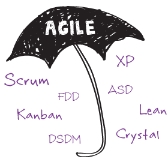
http://agilemanifesto.org/
February 11-13, 2001, at The Lodge at Snowbird ski resort
Wasatch mountains of Utah
http://modernagile.org/ - Joshua Kerievsky
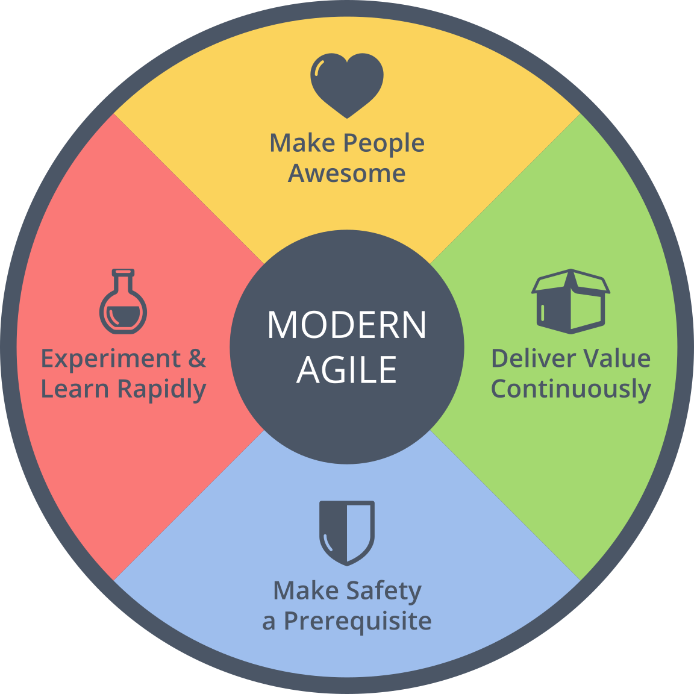
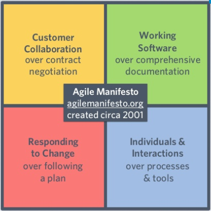
http://modernagile.org/ - Joshua Kerievsky


Agile's Purpose
Obtain Feedback Rapidly
Respond to Change
How Would
You Categorize Agile?
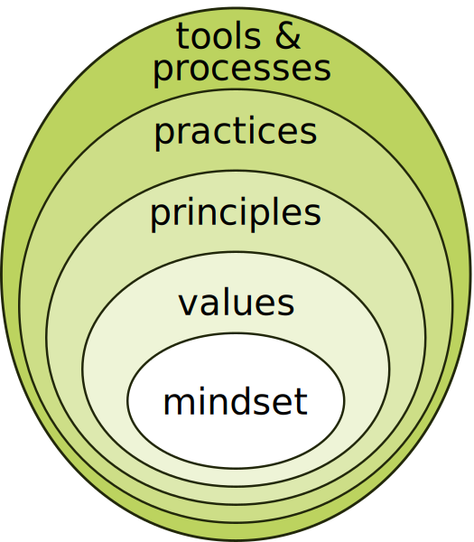
It's a
MINDSET
Fundamentals
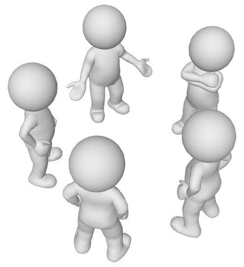
self-organizing, autonomous teams
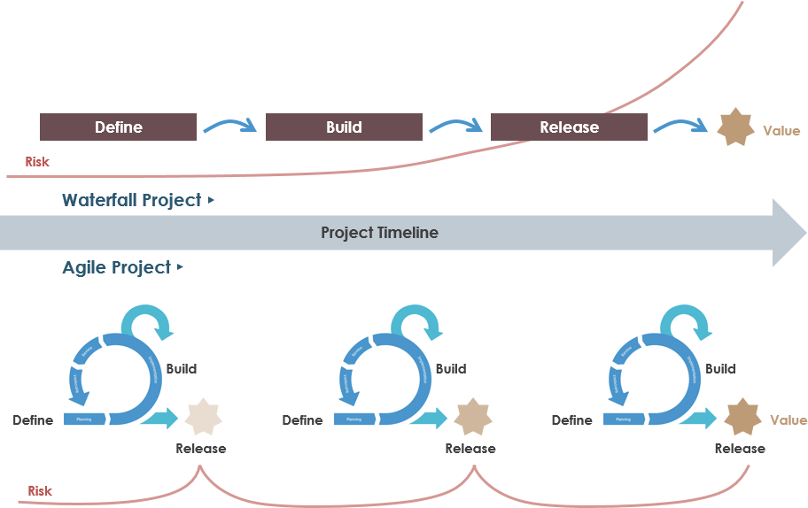
small, incremental delivery
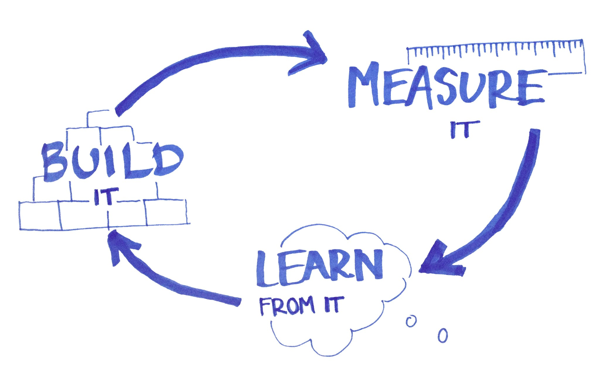
continuous learning
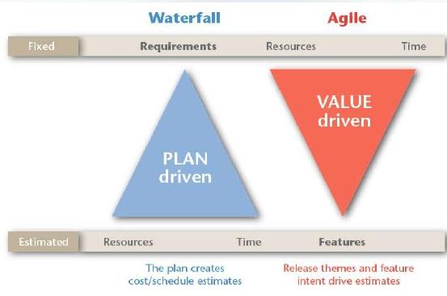
response to change
a journey, not a destination
Frame- works
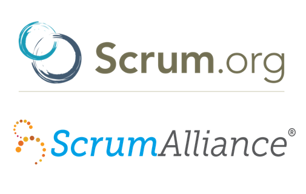
Scrum is a
framework
for developing, delivering,
and sustaining complex products.
• Lightweight
• Simple to understand
• Difficult to master
http://www.scrumguides.org
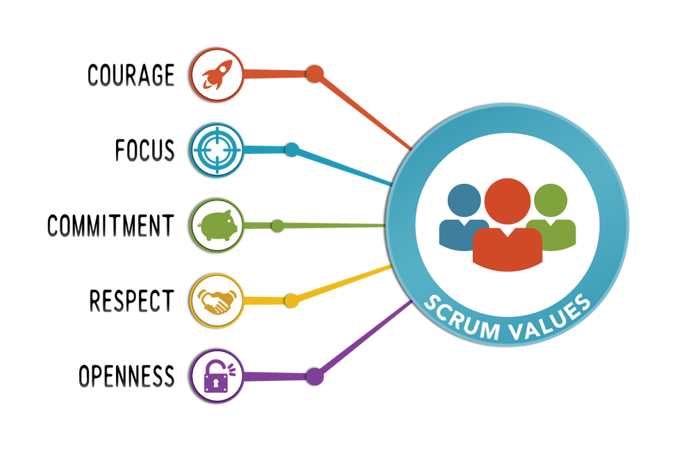
scrum values
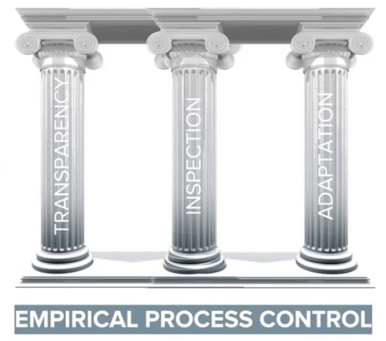
scrum pillars
Timeboxed
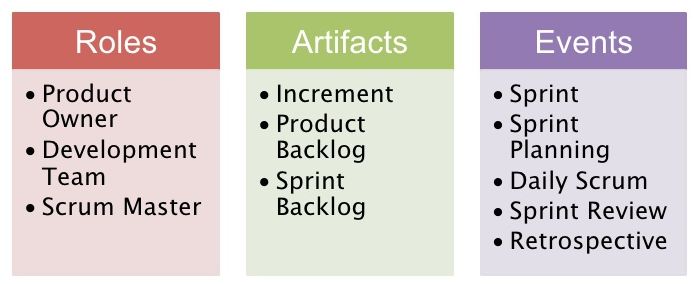
scrum elements
kanban
• Same as scrum
• No Timeboxes
• Excels in Operational Work
• Gates often have "WIP Limit" or "Flow limit"
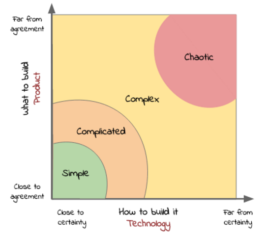 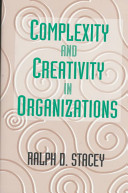
Choose Your Path
Facilitation
Creating An Agile Company
Automated Delivery
Automated Testing
Working With Business
Delivering Killer Product
Working With Teams
Product Owner
Agile Enabler
Self- Organizing Team
Agile Foundations
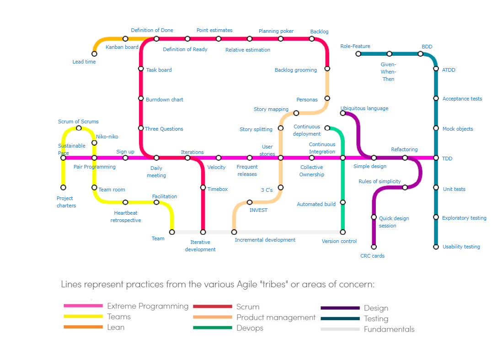
https://www.agilealliance.org/agile101/subway-map-to-agile-practices/
### Thank you! ---
john@ReadySetAgile.com - John Riley
@ReadySetAgile
@ReadySetAgile
https://www.facebook.com/ReadySetAgile/
https://www.linkedin.com/company/ready-set-agile/

 @ReadySetAgile
@ReadySetAgile @ReadySetAgile
@ReadySetAgile https://www.facebook.com/ReadySetAgile/
https://www.facebook.com/ReadySetAgile/ https://www.linkedin.com/company/ready-set-agile/
https://www.linkedin.com/company/ready-set-agile/